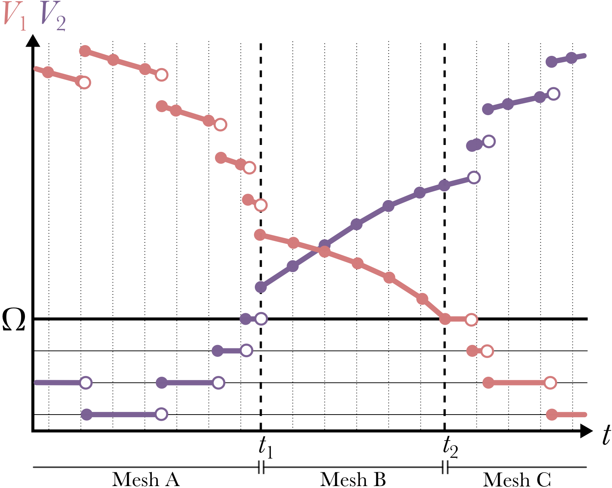
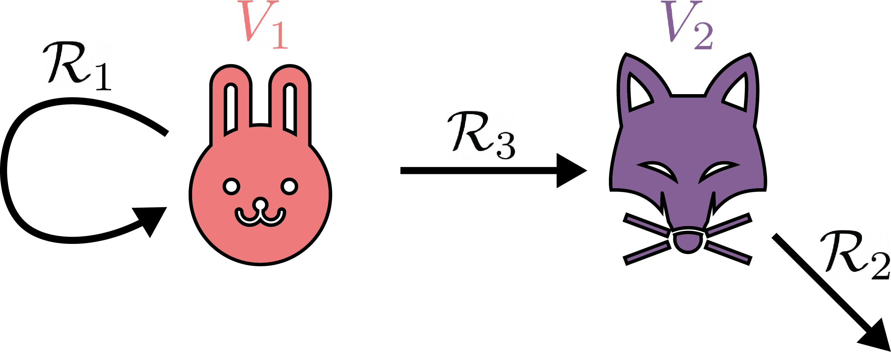
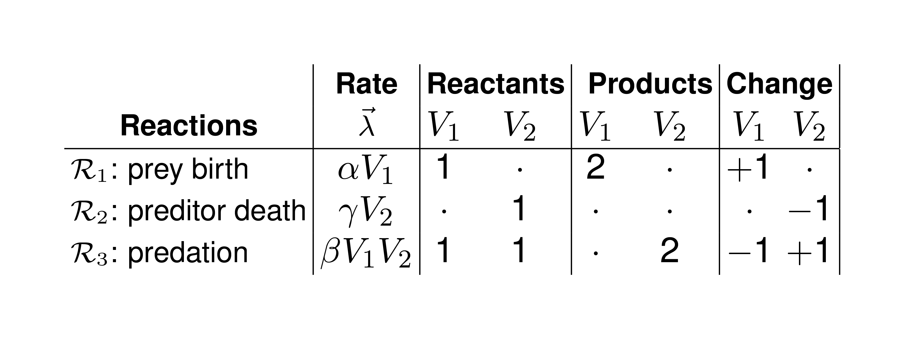
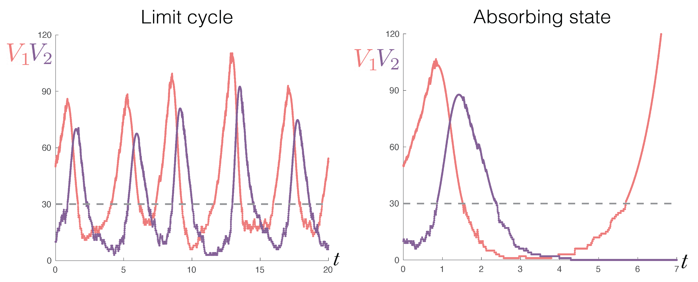

Jump-Switch-Flow Documentation¶
Overview¶
This package provides an algorithm for sampling from the Jump-Switch-Flow (JSF) process. The JSF process is a continuous-time process that can be used to represent compartmental models where stochastic effects are important at low population sizes but can be ignored at high population sizes.
JSF Mathematical Framework¶
To couple both the stochastic (Jumping) and deterministic (Flowing) compartments, we model each compartment as to where they are in state space.
Consider a compartmental model with \(n\) compartments \(\vec{V} = \left\{ V_i\right\}_{i=1}^n\), where \(V_{i}(t)\) represents the value of the \(i\) th compartment at time \(t\). For example, \(V_i\) could be the number of people infected with a pathogen, or the copy number of a molecule in a cell. The state variables \(V_i\) may take values from different domains depending upon the resolution needed for the model. For example, in an ODE, \(\vec{V}\) will have real values and in a CTMC \(\vec{V}\) might have integer values.
Typically, discrete values are used to represent small populations, while larger populations will be represented with a continuum. To accommodate both scales, we model the domain of \(V_{i}\) as \(\mathcal{V}_{\Omega_i}=\{0,1,\ldots,\Omega_{i}\}\cup(\Omega_{i},\infty)\). The switching threshold parameter, \(\Omega_i\in \mathbb{Z}_{\geq 0}\), is where the \(i\) th compartment transitions from discrete to continuous dynamics. If a compartment \(V_{i}\) has a value in \(\{0,1,\ldots,\Omega_{i}\}\), we call it “discrete” (or “jumping”), and if it has a value in \((\Omega_{i},\infty)\), we call it “continuous” (or “flowing”). While the switching threshold can be compartment specific, for ease of exposition, we will only consider a single threshold shared between all compartments \(\Omega = \Omega_i\). At any moment in time let us assume \(q\) of the \(n\) compartments are flowing. We use the notation \(\vec{V}_F = \left\{ V_i: V_i>\Omega \right\} \in (\Omega,\infty)^q\) and \(\vec{V}_J = \left\{ V_i: V_i\leq \Omega \right\} \in \left\{0, 1, \ldots, \Omega \right\}^{(n-q)}\) to represent the compartments in each of the flowing and jumping states, respectively.
The dynamics of each compartment \(V_i\) are described by a set of \(m\) “reactions” \(\mathcal{R} = \left\{\mathcal{R}_k \right\}_{k=1}^m\). Each reaction \(\mathcal{R}_k\) is defined by two properties: the rate (per unit time) at which it occurs, \(\lambda_{k}\), which may be (and usually is) a function of the state \(\vec{V}\); and the effect on the state, i.e. the change \(\eta_{ik}\) to the size of compartment \(V_i\) when reaction \(\mathcal{R}_k\) occurs. As a matrix, \(\eta\in \mathbb{Z}^{n,m}\) is referred to as the “stoichiometric matrix”. For ODE models, these reactions occur continuously and are written in the form
while for CTMC models, reactions in the system \(\mathcal{R}\) occur as discrete events. In the later case, each reaction \(\mathcal{R}_k\) has a separate propensity described by \(\lambda_k(\vec{V})\), this propensity remains constant between events but when an event \(\mathcal{R}_k\) occurs, there is a change in \(\vec{V}\) (as specified by the elements of \(\eta_{\cdot k}\)) and therefore in \(\vec{\lambda}(\vec{V})\).
We define the subset of reactions \(\mathcal{S}\subseteq \mathcal{R}\) to contain those treated as stochastic events. We define \(\mathcal{S}\), which we use throughout this manuscript, captures a larger set of reactions; \(\mathcal{S} = \left\{\mathcal{R}_k:\exists i \text{ s.t. } V_i\in\vec{V}_J \text{ and } \left(\eta_{ik}\neq 0 \text{ or } \partial_{V_i}\lambda_k \neq 0\right) \right\}\). In this definition, a reaction is included in \(\mathcal{S}\) if either (1) it causes a change in jumping (discrete) populations textit{or} (2) it is influenced by a discrete population (perhaps as reactants for example).
Reactions in \(\mathcal{S}\) are simulated using stochastically sampled times similar to CTMC models. It is important to note that, unlike time homogeneous CTMC models, the propensities are not constant because the state \(\vec{V}\) (and therefore \(\vec{\lambda}\)) are continuously varying. When any reaction \(\mathcal{R}_k\in\mathcal{S}\) occurs, we say the system has “jumped” and an instantaneous change of \(\eta_{ik}\) for each compartment \(V_i\) occurs (irrespective of whether \(V_i\in\vec{V}_J\) or \(V_i\in\vec{V}_F\) to ensure mass conservation is observed). We will refer therefore to reactions in \(\mathcal{S}\) as “jumps”. The reactions in \(\mathcal{S}'=\mathcal{R}\setminus \mathcal{S}\) are not stochastic, we call these “flows” because they represent the continual change of value of the relevant compartments, all of which are continuous by definition of \(\mathcal{S}'\). At any moment in time, we denote \(|\mathcal{S}'| = p = m - |\mathcal{S}|\) to be the number of reactions which are flowing.
Finally, the hybrid model that we propose is capable of “switching”. Switch events are defined as a compartment between \(\vec{V}_F\) and \(\vec{V}_J\). These events occur when a compartment’s value crosses the switching threshold \(\Omega\). Importantly, switch events can change \(\mathcal{S}\) and are paradigm defining events which should occur infrequently compared to jumps (frequent) and flows (continuous).
Due to the way that \(\mathcal{R}\) is partitioned, it is possible to order the rows and columns of \(\eta\) at any moment into the upper-triangular block form
where \(\eta_{\mathcal{S}'} \in \mathbb{Z}^{q\times p}\), \(\eta_{\mathcal{S}} \in \mathbb{Z}^{(n-q)\times (m-p)}\) and \(\bar{\eta}_{\mathcal{S}} \in \mathbb{Z}^{q\times (m-p)}\) refer to stoichiometric coefficients for changes in flowing compartments under flows, jumping compartments under jumps, and flowing compartments under jumps, respectively. Written as a system of equations analogous to the above ODE equation, the hybrid JSF model we propose formally takes the following form. For any time interval \(t_0<t<t_1\) between switching events,
where \(\vec{\lambda}_{\mathcal{S}'}\in\mathbb{R}^p\) are the reaction rates of flows and \(\vec{\Lambda}_{\mathcal{S}}\) is a stochastic vector of \(m-p\) delta-function spike trains that are derived from the realisations of \(m-p\) different jumps sampled at rates which are dependent on the dynamic changes in the propensities \(\vec{\lambda}_{\mathcal{S}}\in\mathbb{R}^{m-p}\) for these jumps.
The below figure shows how it is possible for a variable to switch between flowing and jumping regimes. When a flowing variable decreases to \(\Omega\), it switches to jumping and we consider it a discrete variable. When a jumping variable jumps from \(\Omega\) to \(\Omega+1\) it switches to flowing and we consider it to be a continuous variable.
{kind=link}
Lotka-Volterra predator-prey model example¶
As a simple example for how JSF can be used to capture both stochastic and deterministic dynamics, we consider the classic Lotka-Volterra preditor-prey model. In this model, individuals are either prey (\(V_1\)) or predator (\(V_2\)). This model is famous for being susceptible to Atto-fox problem, where the deterministic description of the model allows for states to become infeasibly small, where the compartment would have otherwise had gone extinct. However, we will see that the JSF process can capture the stochastic effects of the model and permit the system to exhibit both the typical coexistence of the two species and the extinction of one of the species.
The model is described as the following way: the prey reproduce at a constant rate and are eaten by predator at a rate proportional to the number of predator. The predator die at a constant rate and are reproduced at a rate proportional to the number of prey they eat. Mathematically, the model is given by:
The compartment model diagram for this preditor-prey model is shown below.
{kind=link}
Written as a JSF model, the stoichiometric matrices for the predator-prey model is given by:
{kind=link}
We can simulate this model using the JSF process. In doing so, we can see how the model behaves as both a stochastic and deterministic process to obtain both the limit cycle and absorbing state behaviour, as shown in the figure below.
{kind=link}
Predator-prey model with JSF example¶
To simulate the Lotka-Volterra predator-prey model using the JSF process, we first need to import the necessary packages.
import pandas as pd
import random
import matplotlib.pyplot as plt
import jsf
random.seed(42)
Here, pandas is used to store the simulation results, random is used to set the seed for reproducibility,
matplotlib is used to plot the results, and jsf is the package we are using to simulate the process.
Next, we define the initial condition of the predator-prey model and the model parameters. The predator-prey model has two compartments, so we define the initial condition as a list of length two:
x0 = [50, 10]
This initalises the model with 50 prey and 10 predators.
Next, the model parameters are the reproduction rate of the prey, mA, the predation rate, mB,
the death rate of the predators, mC:
mA = 2.00
mB = 0.05
mC = 1.50
We then define the Rates if the model:
rates = lambda x, _: [mA * x[0],
mC * x[1],
mB * x[0] * x[1]]
and the stoichiometric matrices of the model:
reactant_matrix = [[1 , 0],
[0 , 1],
[1 , 1]]
product_matrix = [[2 , 0],
[0 , 0],
[0 , 2]]
We define the maximum time of the simulation:
t_max = 10
There is a little bit of configuration needed to tell JSF how to
actually run the simulation. Namely, we use the stoichiometric matrices to define the stoichiometry
of the process. DoDisc is a boolean list, and describes which compartments are initially represented
as a stochastic processes.
stoich = {
"nu": [ [a - b for a, b in zip(r1, r2)]
for r1, r2 in zip(product_matrix, reactant_matrix) ],
"DoDisc": [1, 1],
"nuReactant": reactant_matrix,
"nuProduct": product_matrix,
}
Now all we need to set are the options for the simulation. We set the time step, dt to be 0.01 and the
threshold for switching, SwitchingThreshold, to be 30 for both compartments. EnforceDo is a boolean list and describes which
compartments are permitted to dynamically change between discrete and continuous regimes. If an entry of EnforceDo is 1,
then that compartment is allowed to switch between discrete and continuous regimes. If an entry of EnforceDo is 0, then that
compartment is not allowed to switch, and will remain in the regime it was initialised in.
my_opts = {
"EnforceDo": [0, 0],
"dt": 0.01,
"SwitchingThreshold": [30, 30]
}
We are now able to call jsf.jsf to simulate the process using the “operator splitting” method.
sim = jsf.jsf(x0, rates, stoich, t_max, config=my_opts, method="operator-splitting")
Visualising the simulation¶
Finally, we can plot the results of the simulation. We’ll use a combination of pandas and matplotlib to do this, but the output of jsf is a pandas DataFrame of numbers so it’s easy to use whichever plotting library you prefer.
plt.plot(sim[1], sim[0][0], label="Predator")
plt.plot(sim[1], sim[0][1], label="Prey")
plt.axhline(y=my_opts["SwitchingThreshold"][1], color="r", linestyle="--")
plt.xlabel("Time")
plt.ylabel("Population size")
plt.legend()
plt.savefig('PredatorPrey.png', dpi=500)
plt.show()
{kind=link}
Types¶
The jsf.types module provides some key types for this package.
There is nothing fancy here; they are just used to make the type hints
more informative and help to leverage mypy.
CompartmentValue: the value of a compartment, this is afloat.SystemState: the state of the system, this is a list ofCompartmentValues.Time: the time, this is a float.
Recall you can use the following to type check the code:
mypy jsf tests
API¶
Installation¶
This package is not yet available on PyPI. You can install it from a local copy or from GitHub.
From Local Copy¶
If you have a local copy of the package, you can install it with pip.
pip install /path/to/package
From GitHub¶
This won’t work until the package has been made public. Once it has, you can install it with pip.
pip install git+https://github.com/DGermano8/jsf.git
FAQs¶
If you have a question that is not answered by this documentation, please lodge an issue on the GitHub page for this package: https://github.com/DGermano8/jsf
Housekeeping¶
Testing¶
There are some unit tests in the tests directory. You can run them
with the following command.
python3 -m unittest discover -s tests
Code formating and checking¶
This package uses black and mypy for code formatting and type
checking, respectively. You can run them with the following commands.
black jsf
mypy jsf